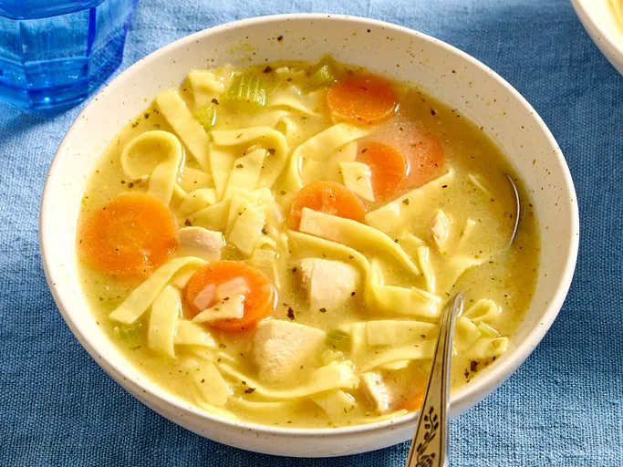

Description: "This chicken noodle soup recipe can be on the table in just 40 minutes. Whether you're feeling under the weather or you're just in need of a little comfort, this comforting soup will warm you up from the inside out."
Note: Descriptions, Recipes, and Ingredients are all pulled from the Allrecipes website